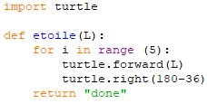
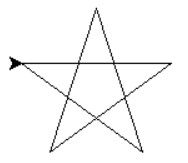

Nous allons utiliser le module Turtle de Python, qui permet de tracer des figures.
Pour l'utiliser, vous devrez l'appeler en haut de fichier avec "import turtle"
Commandes principales du module Turtle :

Etape 1 : une étoile
Voici le code pour faire une étoile de longueur L :

Et voici le résultat :

Programmer cette fonction sur Spyder puis la tester.
Etape 2 : reproduction de figures
Dans le même fichier que le précédent, utiliser la fonction etoile pour réaliser les figures suivantes.
Entre chaque test, pensez à effacer et remettre les paramètres à zéro en tapant dans la console (fenêtre de droite) : turtle.reset()
Attention vous ne devez pas ré-écrire la fonction etoile, mais l'utiliser à l'intérieur de vos fonctions figure1(), figure2(), figure3().
Figure 1

Figure 2

Figure 3